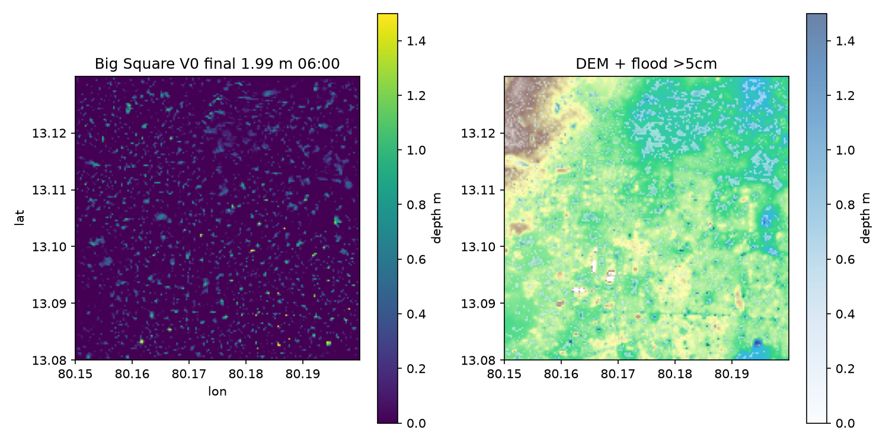
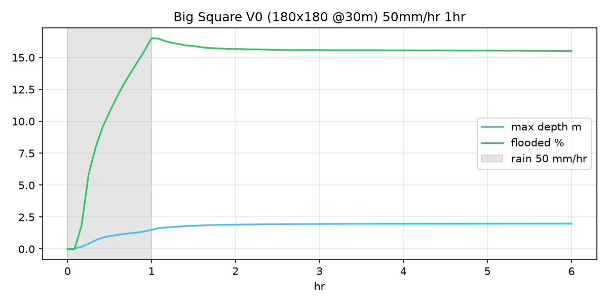

python -m http.server 8002).
index.html needs http://localhost:8002 (not file:// double-click) because it fetch('snapshots_web.json') 1.3 MB — browsers block file:// fetch (CORS). Also tiles tile.openstreetmap.org 403 Referer were blocked before; now uses tile.openstreetmap.fr/hot (no key).cd test/TELEMAC-2D/test-2.0/visualization && python -m http.server 8002 → http://localhost:8002 → hard reload Ctrl+Shift+R. If still blank, open simple.html (this file) which works via file://.
Static PNGs: depth_final.png timeseries.png in this folder — no server needed. Live needs server + snapshots_web.json + pako.